Terrain from above: fix options
Steal a Slime. The grass and hills around the map look broken from high up (Merijn, store video end shot). Pick one option; nothing is built yet.
What's wrong
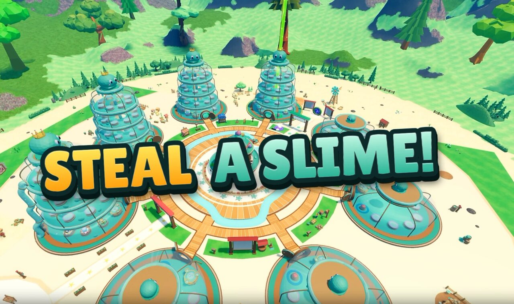
- Wavy streaks. The grass texture (
SlimeGrassin MaterialService) repeats every 20 studs. Seen from above, the repeats line up into ripple bands. - Purple-grey patches. Steep bits of the low hills turn into bare Rock and Slate, so small rock scabs dot the green.
- Hard dark blotches. The darker grass patches (LeafyGrass) are much darker than the grass, with dithered edges.
Players see this too: from the top of a tall jar base, a slide or the obby. At eye level the grass looks fine, and none of the options below change it there.
Options (same camera, about 200 studs up)
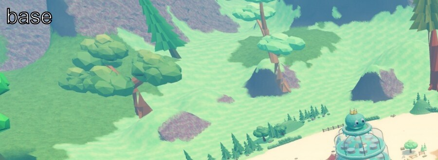
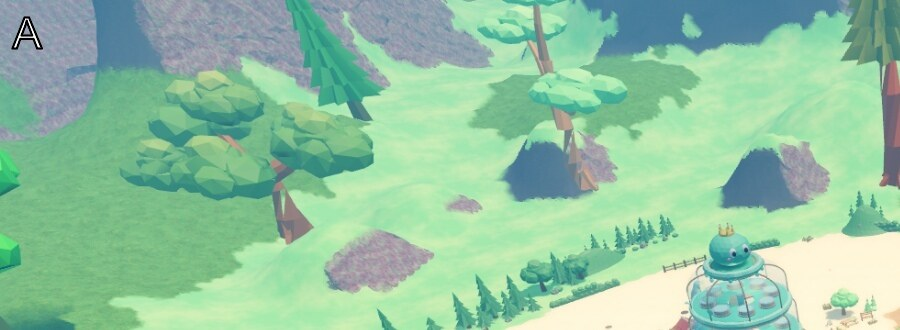
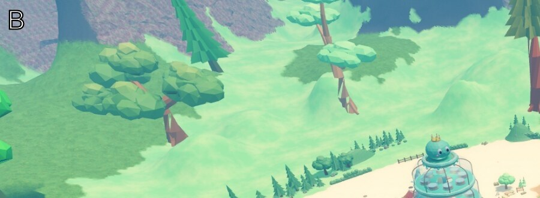
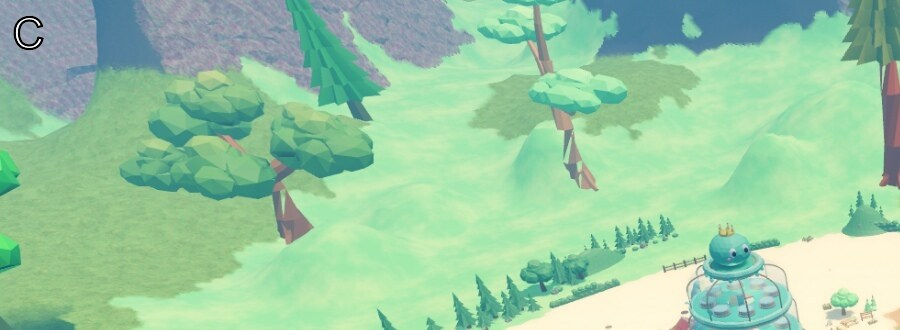
Whole view
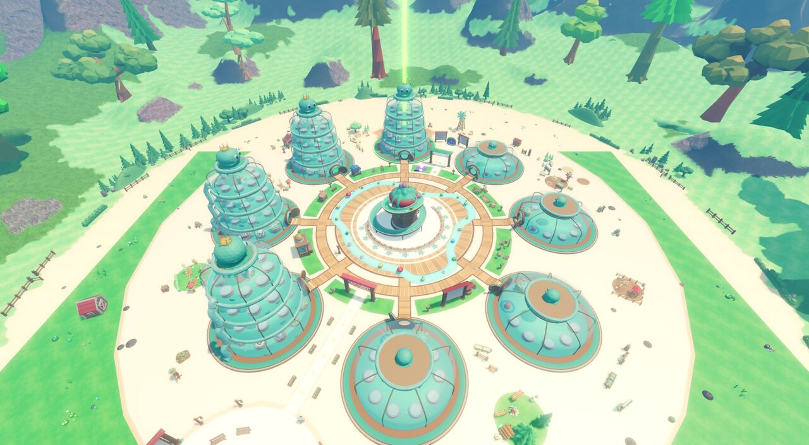
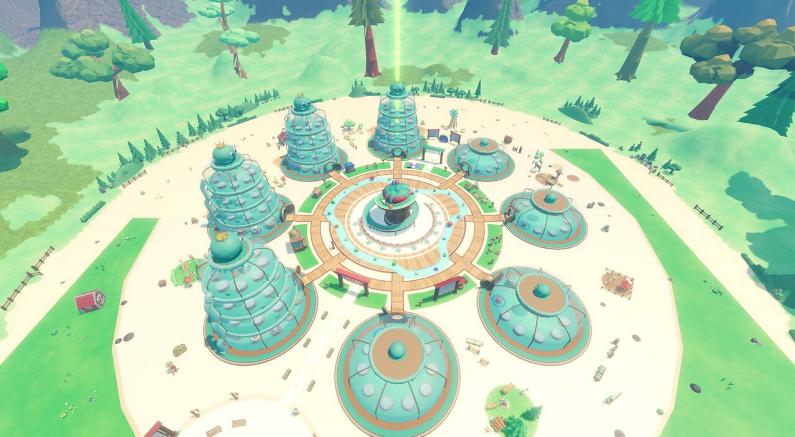
Eye level stays the same
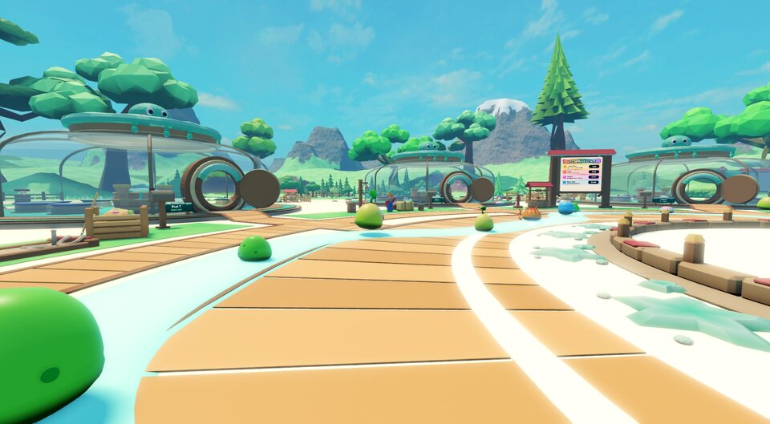
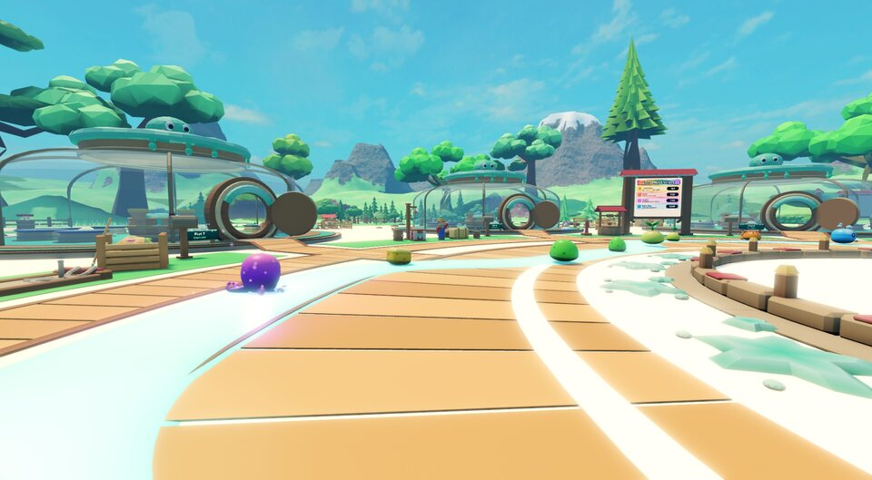
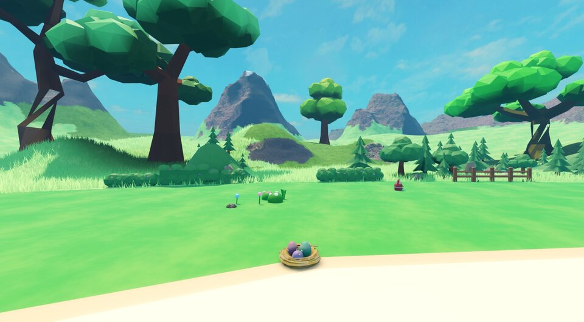
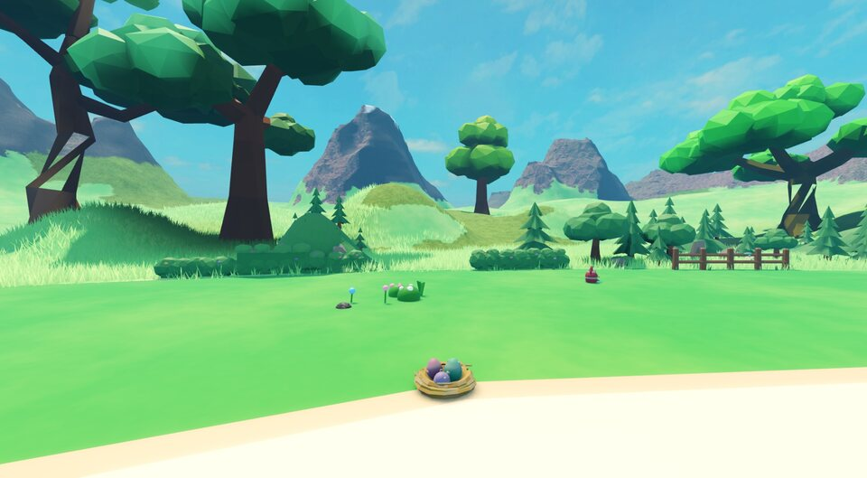
What each option changes in code
- A:
default.project.jsonMaterialServiceSlimeGrass.StudsPerTile20 → 60 (one value; the inner ground grass uses the same variant). - B: also
src/visuals/shared/BorderTerrain.luaumaterial(): Rock/Slate only above a height floor, plus a spec. - C: also
BorderTerrain.COLORS.LeafyGrasslifted towards Grass (the stills used 138, 188, 100).
The stills were made by changing these live in a hidden Studio test. The real fix is checked again in Studio, from above and at eye level, before a PR.
Not checked
- Not seen on a phone.
- Option B's height floor (45 studs) is a first guess; the mountains' foot may need tuning.